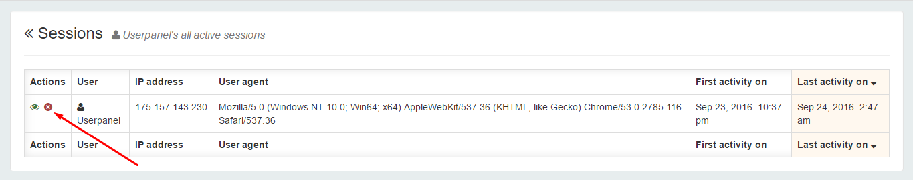
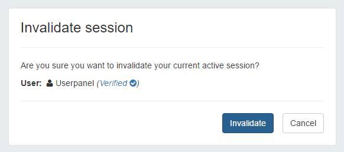

UserPanel administrators can easily view all user sessions with lot of usefull information about user sessions. i.e: ip address, user agent, first active timestamp, last active timestamp, etc... also both administrators and users can view active sessions but normal users only can view their active and expired sessions only.
Administrators can view all user session and active user sessions by clicking on All user sessions menu item and All active user sessions menu item under Users menu on main navigation bar. normal users can view their expired and active sessions by simply clicking on their small profile thumbnail on top right corner of UserPanel's main navigation bar.
Administrators can see all current active user sessions. both administrators and users can see their active sessions as well.
On active sessions view, there is a button called invalidate session available to both administrators and users to invalidate active sessions.
Administrators can invalidate any user session. while normal users can can only invalidate their active sessions only.
